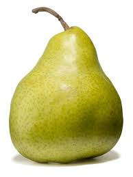
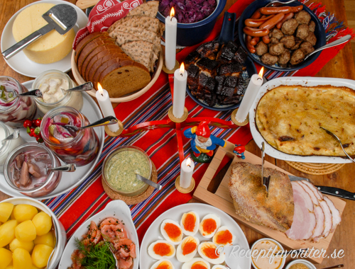

Förrätter
Mumsig (lite torr kanske) skinkmacka
En härlig mackjävel med dubbla bröd gjord med kärlek och av en kock
Päron
Ett gott päron från ett av alla päronträd

Huvudrätter
Fruktsallad
Fruktsallad i ett glas. Inte mycket till huvudrätt tbh
Julbord
Klassiskt svenskt julbord med ägghalvor, skinka, potatis, mjukt bröd, knäckebröd, köttbullar, prinskorv, fem olika sillsorter, räkor, janssons frestelse, senap, ost, revben med mera
Köttbit
En mör köttbit. Blodig somfan
Efterrätt
Creme Brulee
En krämig efterrätt för dig som gillar socker